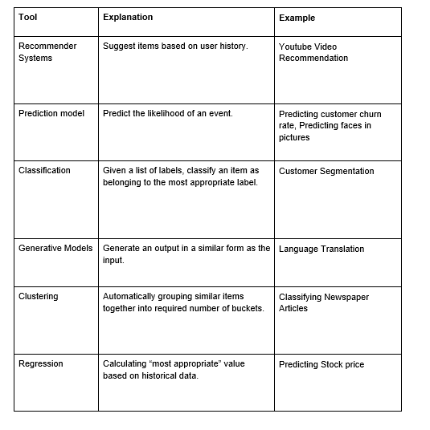
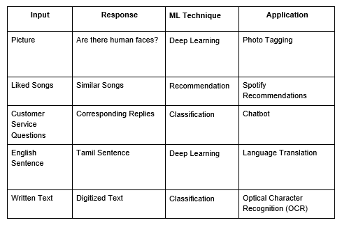

Artificial Intelligence: Where to dig
Artificial Intelligence: Finding Value
What is Artificial Intelligence?
It's a funny term. It's implicitly comparing the intelligence of a machine with a human, while both are very different types of intelligences.
Machines or computers can process data fast.
So the idea is to let them ingest data, run models and spit out the output (in almost real time).
Most folks in AI research and implementation focus on building models or infrastructure for one of these applications:
● Natural Language Processing: Virtual Assistants, Chatbots
● Computer Vision: Photo tagging, X-Ray Diagnosis, Autonomous Vehicles
● Data Science and Analytics: Recommendations, Predictions Engines
● Robots and Sensors: Industrial bots, Smart Devices/Homes
The models used by these application are "trained" with different types of "learning":
● Supervised Learning: Teaching a machine to “learn” by showing it lots of examples of inputs and responses.
● Unsupervised Learning: Feeding in data and letting the machine recognize patterns
● Reinforcement Learning: Not giving the machine any data but letting it loose in an environment and having it learn through trial-and-error.
● Deep Learning: Using the training of one model to train another model.
Some of the common models (or algorithms that process data) are:
- Recommender Systems
- Prediction Models
- Classification Engines
- Generative Models
- Clustering Engine
- Regression Models
Most use-cases can be simplified to one or more of the following:

What can we do with AI?
First, it's important to understand that although it may seem otherwise, A.I. is not magic.
To be viable it needs high quality data, and if programmed into agents in the real world, it will act without ethical principles.
We can think of use-cases as belonging to three categories:
1. Improve existing features
Look at each feature of your product/service and ask, “What is this feature trying to maximize/minimize?”
Example: Suppose you handle customer support requests manually. Around 80% of the queries you get would be ones you’ve seen earlier — these can and should be automated. You can deploy a simple FAQ chatbot in days, if not hours, and save hundreds of hours down the line. If the customer request requires dedicated support, then redirect it to a human. Having a chatbot has another major benefit — you get to mine customer support data and identify customer pain-points, improving the quality of your business.
2. Create new features
Write down each activity in a process, and ask what features can create instant value for the user?
Example: Supposing your application stores photos. Using automatic tagging or classification, you can allow the user to search their photos by people or events.
3. Create entirely new products
These are products that disrupt industries — think autonomous cars. It’s an exciting problem to come up with products that haven’t existed before ML: they involve solving old problems in new ways, or new problems that arise because of changing environment. Solutions involve combining technology in innovative ways. We’ll be seeing more of these products when other exponential industries like AR/VR, Quantum Computing, Blockchain, Edge Computing start converging.
Brainstorming Use Cases
We know that the model ingests data, processes it and gives a response.
Using this framework, we can think of interesting applications, which happen to be great business use-cases.

The point here is that every machine learning application involves input (data), which is then processed to give a useful output (a prediction). The in-between part is an algorithm processing data, which is badly named artificial intelligence.
The exciting part is that these in-between algorithms are available as services you can use today.
All the major players are competing in AI-as-a-Service space. You add your data, and the model is built for you. For a quick list of available services, check this out.
As you think of AI use-cases, also consider these points —
Think about data — and how it’s mined.
What data are you generating daily? What permissions are you giving apps access to when you download them? How does having access to your emails, voice recording, transaction history allow your service provider to get more information about you? How could this information be used?
Since machine learning is now available as a service to everybody, data becomes your competitive advantage. Think about improving existing features, creating new features and new products utilizing machine learning.
Don’t get desensitized to change.
Bill Gates said, “We always overestimate the change that will occur in the next two years and underestimate the change that will occur in the next ten.” Be aware that the compounding nature of technology will bring in more change in the next decade than the whole of the last century.
Don’t dismiss moonshot ideas.
There are always going to be naysayers for new technology. A note on those afraid of losing jobs —
Yes, that will happen, but go do something else with your time. You will figure it out. Or use AI to help you figure it out.
Try not to think in black-and-white terms; progress in any A.I. project is a spectrum of failures and successes.
If the technology adds value to society and seems feasible with current state of tools, it will most likely manifest itself in some way — it’s only a matter of time. And will be sooner than most people expect, it will shock them and then they forget about it.
Civilization advances by extending the number of important operations which we can perform without thinking of them.
— Alfred North Whitehead
Each component of any ambitious tech solution requires so many problems have to be solved to get there.
Take self-driving cars, for example - they need real-time Computer Vision solutions, LIDAR, mobile computation, prediction algorithms, A.I. ethics built in.
And each component can be remixed into new products and services.
Super Intelligence
If the universe was able to design us with our intelligence, it's natural that we will try to do the same with the best technology of the age.
AI safety is imperative and edge cases have to carefully considered.
However, this should not stop one from experimenting with different models and use-cases within sandbox environments.